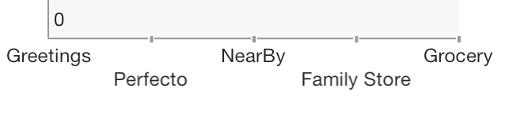

TKChartAxis Class Reference
| Inherits from | NSObject |
| Declared in | TKChartAxis.h |
| Companion guide | Working with Axis |
Overview
Represents a single axis of the chart.

TKChart renders its points in a coordinate system defined by its axes. To do this axes specify the minimum and maximum values that can be presented on the plot area. There are a few different types of axes that can be used with TKChart. They include: numeric, date/time and categorical. You can assign each axis to different series and you can show multiple axes in chart. Axes contain various properties to control their position, style and behavior. All chart axes subclass from TKChartAxis.
- Use TKChartNumericAxis to present numeric values.
- Use TKChartDateTimeAxis to present date/time values.
- Use TKChartCategoryAxis to present categorical values.
Tasks
Appearance
-
styleproperty -
positionproperty -
– isVertical -
plotModeproperty -
titleproperty -
attributedTitleproperty -
labelFormatproperty -
labelFormatterproperty -
hiddenproperty
Ranges
-
rangeproperty -
– majorTickCount
Pan & Zoom
Initialization
Properties
allowPan
Allows panning and zooming of series by this axis.
@property (nonatomic) BOOL allowPanDeclared In
TKChartAxis.hallowZoom
Allows panning and zooming of series by this axis.
@property (nonatomic) BOOL allowZoomDeclared In
TKChartAxis.hattributedTitle
The axis attributed title (if needed).
@property (nonatomic, strong) NSAttributedString *attributedTitleDeclared In
TKChartAxis.hhidden
Determines whether the axis is hidden or visible in chart.
@property (nonatomic, assign) BOOL hiddenDeclared In
TKChartAxis.hlabelFormat
Defines a text format. If the text formatter is not nil, it preserves this property.
@property (nonatomic, copy) NSString *labelFormatDeclared In
TKChartAxis.hlabelFormatter
Defines a text formatter that preserves the textFormat property.
@property (nonatomic, strong) NSFormatter *labelFormatterDeclared In
TKChartAxis.hplotMode
Defines how data points are plotted by an axis.
@property (nonatomic, assign, readonly) TKChartAxisPlotMode plotModeDiscussion
The axis plot modes are defined as follows:
typedef enum TKChartAxisPlotMode {
TKChartAxisPlotModeOnTicks, // Points are plotted in the middle of the range, defined between each two ticks.
TKChartAxisPlotModeBetweenTicks, // Points are plotted over each tick.
} TKChartAxisPlotMode;
Declared In
TKChartAxis.hposition
Determines the position of the axis.
@property (nonatomic, assign) TKChartAxisPosition positionDiscussion
The axis positions are defined as follows:
typedef enum TKChartAxisPosition {
TKChartAxisPositionLeft, // The axis should be positioned at the left side of the chart.
TKChartAxisPositionRight, // The axis shuld be positioned at the right side of the chart.
TKChartAxisPositionTop, // The axis should be positioned at the top side of the chart.
TKChartAxisPositionBottom, // The axis should be positioned at the bottom side of the chart.
} TKChartAxisPosition;
Declared In
TKChartAxis.hstyle
Defines the axis style.
@property (nonatomic, strong) TKChartAxisStyle *styleDeclared In
TKChartAxis.hInstance Methods
formatValue:
Formats a value to string
- (NSString *)formatValue:(id)valueParameters
- value
The value
Declared In
TKChartAxis.hinitWithMinimum:andMaximum:
Initializes the axis with its minimum and maximum range.
- (id)initWithMinimum:(id)minimum andMaximum:(id)maximumParameters
- minimum
The minimum value that specifies the start of the range.
- maximum
The maximum value that specifies the end of the range.
Declared In
TKChartAxis.hinitWithMinimum:andMaximum:position:
Initializes the axis with its minimum, maximum and position.
- (id)initWithMinimum:(id)minimum andMaximum:(id)maximum position:(TKChartAxisPosition)positionParameters
- minimum
The minimum value that specifies the start of the range.
- maximum
The maximum value that specifies the end of the range.
- position
The position value that specifies where to place the axis (left, right, top or bottom side)
Declared In
TKChartAxis.hinitWithRange:
Initializes the axis with range.
- (id)initWithRange:(TKRange *)rangeDeclared In
TKChartAxis.hisVertical
Returns YES for vertical axis and NO for horizontal ones.
- (BOOL)isVerticalDeclared In
TKChartAxis.hmajorTickCount
Returns the tick count for this axis.
- (NSUInteger)majorTickCountDeclared In
TKChartAxis.hnumericValue:
Returns the numeric representation of a value specific for this axis.
- (double)numericValue:(id)valueParameters
- value
The value which is converted to.
Return Value
The numeric representation of the value.
Declared In
TKChartAxis.h